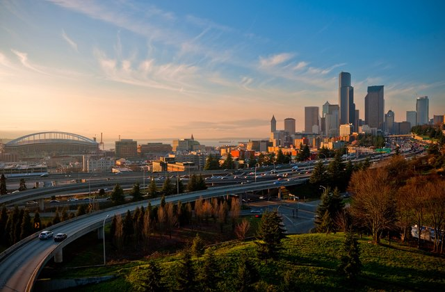

Why Seattle
"Seattle" was named after and in honor of Chief Si'ahl of the local Duwamish and Suquamish tribes, is a seaport city on the west coast of the United States. The city is situated between Puget Sound and Lake Washington, about 100 miles (160 km) south of the Canada–United States border. A major gateway for trade with Asia, Seattle is the fourth-largest port in North America as of 2015.
According to U.S. Census data released in 2018, the Seattle metropolitan area’s population stands at 3.87 million, and ranks as the 15th largest in the United States.
Bellingham, WA, a vibrant city with a population of 82,654 and 30% over 50; is voted as the 5th best place to retire in the US by CNN Money.
Major cities and area include Bellevue, Clyde Hill, Kirkland, Redmond, Issaquah and Sammamish (Eastside); Fremont, Ballard, Wallingford (North Seattle); and West Seattle.
Seattle
With an estimated 730,000 residents as of 2018, Seattle is the largest city in both the state of Washington and the Pacific Northwest region of North America. According to U.S. Census data released in 2018, the Seattle metropolitan area’s population stands at 3.87 million, and ranks as the 15th largest in the United States.
Bellevue
The name "Bellevue" is derived from the French words for "beautiful view". Bellevue is a city in the Eastside region of King County, Washington, United States, across Lake Washington from Seattle. Prior to 2008, downtown Bellevue underwent rapid change, with many high rise projects under construction, and was relatively unaffected by the economic downturn. The downtown area is currently the second largest city center in Washington state with 1,300 businesses, 45,000 employees and 10,200 residents. Based on per capita income, Bellevue is the 6th wealthiest of 522 communities in the state of Washington.